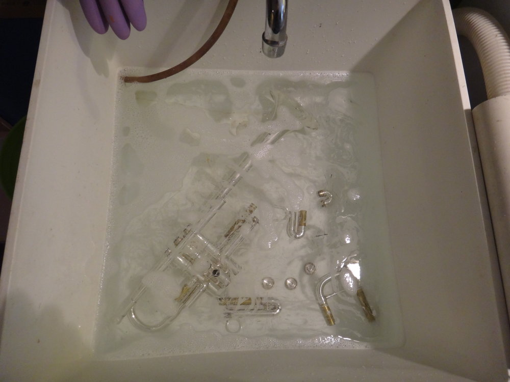

Before beginning, assemble all the items you’ll use to clean your trumpet.
Here’s what I use when I clean my horns:
• A bathtub or sink large enough to immerse the trumpet
• Dawn dishwashing liquid
• Trumpet brushes: a snake brush and a valve casing brush. (My favorite snake and valve casing brushes are HW Brass Saver Trumpet Brushes because their design allows them to pass through every part of the trumpet)
• Several old, lint-free towels that I don’t mind getting dirty
• A Blitz slide and valve care cleaning cloth (This is reusable — keep the bag for storage. I usually double-bag mine to make sure it’s sealed.)
• Good quality valve oil like Hetman #2 for newer trumpets or Hetman #3 for older trumpets
• Heavy slide lubricant like Hetman #8 or Schilke Slide Grease
• A light slide lubricant like Hetman #5
• A treated polishing cloth
1. Take out all three valves and put them someplace safe. I put mine on a folded-up towel where they can’t roll away or be knocked down. Valves are fragile. A ding to a valve will often render it unusable and will mean a trip to a repair shop.
2. If you’re cleaning your trumpet in a bathtub, it’s a good idea to put a towel in the bottom of the tub to prevent your trumpet from scratching the bathtub’s finish. (I clean mine in a utility sink, so I’m skipping this step.)
3. Fill the tub or sink with lukewarm water. The water should be just warm enough to be comfortable to put your hands in — not hot. Water that is hot can damage the finish of a trumpet.
4. As the tub is filling, add just one or two drops of Dawn dishwashing liquid.
5. Lay a towel out so it’s ready to put your trumpet on to dry.
6. Now, take apart the rest of the trumpet. Immerse all parts of the trumpet (other than the valves — you took those out and put them someplace safe!) in the water. 
7. While the trumpet soaks in the water, rinse off the bottom portion of the valves and gently scrub out the ports in the valves. Place them back on their towel to dry off.
8. Now, take the slides and bottom valve caps out of the tub one at a time to clean them out. Do this by brushing them out with the snake and rinsing them with water. When you’re done, dry each part off, gently shake the water out, and place the slide or cap on a towel.
9. If your slides and valves have a lot of built up dirt and discoloration on them, use a Blitz slide and valve care cloth to rub this off. Sometimes it takes a lot of rubbing. (This cloth can also be used on the raw brass parts of the slides on the main part of the trumpet.) When you’re done using this cloth, rinse off whatever part you used it on and put it on the towel.
10. Once the slides and valve caps have been cleaned, you’ll be left with the main part of the trumpet in the tub. Drain the water from the tub and brush out all parts of the trumpet. Be sure to run a snake through the lead pipe a few times. After brushing out the trumpet, flush out any excess dirt with running water.
11. Towel off the main part of the trumpet and put it with the slides and valve caps on the towel.
12. Let the interior of the trumpet dry out for 10 minutes or so before putting it back together.
13. When you’re ready to reassemble your trumpet, start with the slides.
14. For the main tuning slide, put on a heavy tuning slide grease. Spread a thin layer of the grease on the whole slide. Put the tuning slide in the trumpet and then wipe off the excess grease.
15. Next, do the second valve slide. You can also use the heavy tuning slide grease on this slide. Put a thin layer of the grease on the slide, insert it, and wipe off any excess grease.
16. For the first and third slides, use a thinner lubricant like Hetman #4 First and Third Slide Lubricant. Put several drops of this lubricant on different places on the slides. When you put the slide back on the trumpet, move the slide in and out several times to distribute the lubricant evenly.
17. Now replace the bottom valve caps. It’s a good idea to put a drop of valve oil or a dab of slide grease on the threading (just a little bit!) to keep the caps from getting stuck later. Screw the caps on firmly, but don’t force them to be super tight.
18. Now take each valve, oil it, and put it back in the trumpet. Blow air through the trumpet after replacing each valve to make sure you put it in the right way (the air should blow freely).
19. Last, use the treated polishing cloth for silver or lacquer plating and polish the finish of your trumpet with it.